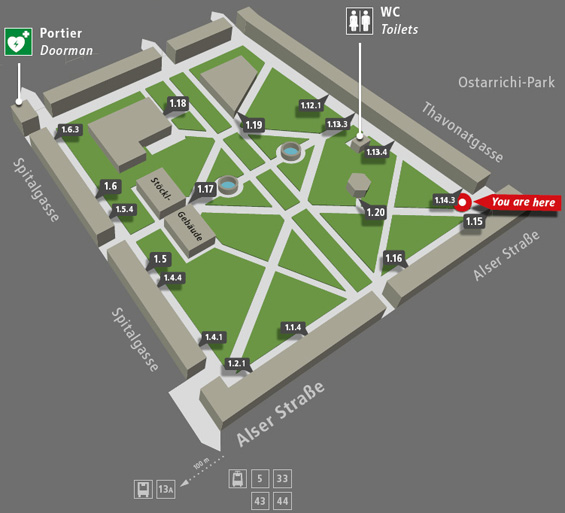

|
Navigation
|
|
Generative Linguistics in the Old World 34 April 28-30, 2011 Conference site On the google map below you find the three locations where events of GLOW 34 will happen. The registration/reception and the workshops on intervention and on intonation (April 27) will take place in the department of linguistics in Sensengasse 3a. University of Vienna area map auf einer größeren Karte anzeigen The colloquium (April 28-30) and the workshop on identity (May 1) will take place at auditorium C1 (Hörsaalzentrum C) in court 2 of the campus of the University of Vienna. You can see the location of the auditorium on the campus marked by the red arrow on the map below (building 2.6 on the map). The yellow arrow points to the Sensengasse, where the department of linguistics is located. The campus map can be downloaded in pdf. For a map of the wider university area consult the following pdf. Both maps include useful information on transportation and other infrastructure. 
Should you need to make copies, here are some options: Facultas am Campus (1.5.4 on the map below) Campus (Altes AKH) court 1 Alser Str. 4/1/5/4 1090 Wien website Lehrmittelstelle (inside the old university building next to subway station Schottentor, visible on the right half of the google map above) Dr. Karl Lueger-Ring 1 1010 Wien website Repacopy (chain of copy shops) The best option is the one at: Franz Josefs Kai 33 1010 Wien which is open 24/7. You can find more Repacopy shops on the following website. Die Kopie (chain of copy shops) The one located most conveniently is at: Universitätsstraße 8 1090 Wien You can find further shops at the following website website. There is a big number of restaurants, cafes, and bars in the area. But there are also a few restaurants and cafes direclty in court 1 of the campus (detailed in the map below). In particular: Bierheuriger zum Gangl (1.14.3) Stiegl Ambulanz (1.18) Universitätsbräuhaus (1.12.1) Cafe Salettl (1.20) Building 1.19 is a large supermarket called BILLA.  Apart from the restaurants on campus, the following restaurants are close to the conference site. Note that many restaurants in Vienna offer cheap lunch deals (Mittagsmenu) including: Restaurant zur goldenen Kugel (Viennese cuisine) Lazarettgasse 6 1090 Wien website Wickerl (Viennese cuisine) Porzellangasse 24a 1090 Wien Viennese cuisine about 10 mins walking distance -- worth it Café Berg (mixed cuisine) Berggasse 8 1090 Wien website Rebhuhn (Viennese cuisine) Berggasse 24 1090 Wien about 5-10 mins walking distance I vecchi amici (Italian cuisine) Liechtensteinstraße 24 1090 Wien website about 10 mins walking distance, good lunch deals Café Votivpark (Viennese café) Kolingasse 5 1090 Wien 10 mins walking distance, very typical Viennese place, more of a cafe than a restaurant, offers lunch deals An exhaustive list of cafés, bars and restaurants close to the conference site can be found here. |